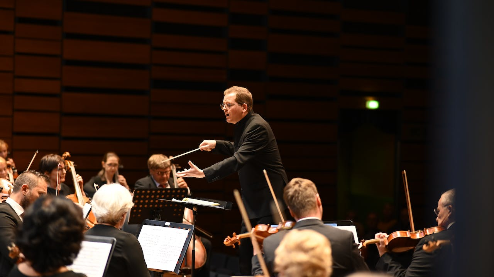

J'ai toujours trouvé le monde de la musique passionnant, que ce soient des joueurs d'instruments ou tous simplement des compositeurs ou créateur de musique. C'est pourquoi il y a un peu près 8 ans, j'ai décidé de m'inscrire en musique.
Je me suis donc inscrit en guitare ainsi qu'en solfège, j'ai désormais 7 ans et + de guitare et 7 ans de solfège à mon actif. J'ai passé mon diplôme de premier cycle de solfège en début 2023, un diplome que j'aurais pu avoir plus tôt si le covid n'avait pas tout bloqué.
Après ma 4e année de guitare classique, je décide de me mettre aussi à la guitare électrique pour y découvrir une autre facette de cet instrument ainsi que pour élargir les possibilités de morceau. Ces années de musique m'ont fait découvrir de grand compositeurs, dont certains donc je suis allé voir les concerts. Pour présenter le concert qui m'a le plus impréssionné, c'était celui de Hans Zimmer un compositeur allemand qui a réalisé de nombreuses musiques de films connus tels que "inception", "interstellar", "The last samurai", "dune" et bien d'autres.
Orchestre :
L'an dernier, en 2022, j'ai rejoint l'orchestre de mon village, un orchestre composé d'environ 20 à 25 musiciens. Rejoindre cet orchestre était pour moi une bonne opportunité de m'améliorer en jeu de groupe ainsi qu'en jeu personnel. (solo)
C'est donc dans cet orchestre que j'ai réalisé mes premiers concerts pour plusieurs événements divers. Cela m'a donc appris à gérer mon stress, à s'organiser dans la préparation des morceaux et m'a aussi permis de développer le domaine du social en rencontrant des musiciens très doués.
Je ne suis actuellement plus dans l'orchestre pour des raisons scolaire. Les répétitions étant le lundi soir entre 20 h et 22 h et la non-possibilité de rentrer chez moi en semaine m'empêche de continuer le travail en orchestre. Je reprendrai donc sûrement après mes études au possible.

voici un petit morceau bien sympa trouvé sur internet libre de droit pour compléter ma présentation sur mon parcours musical